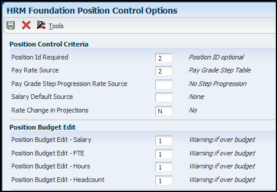

Human Resources Management (HRM) System Options (P05001S) affect many modules within the Human Capital Management applications. This document provides information on how these settings effect processing of the Human Capital Management applications.
Scope
This document is intended for EnterpriseOne users who are setting up the Human Resources and Payroll modules for use by their organization.
Details
Overview of System Options (P05001S)
To define default information that applies to the entire system, you set up system options. These options control the types of information that you track and the rules that the system uses to perform specific calculations. For example, you use system options to specify the date that the system will use for tracking changes.
This table describes the types of information that you control with system options:
Information Type
Description
Pay Information
To ensure that you enter acceptable pay rates for employees, set up the system to verify appropriate pay types for employee pay grades or pay-grade steps.
Employee History and Turnover
To define whether you want to keep historical records of employee information, set up employee history and turnover options. These options are crucial to successful history and turnover tracking.
Recruitment
To automate the process of creating and maintaining requisitions, set up requisition information.
Position Control Information
To create, monitor, and control position budgets, set up position information.
HRM System Options (P05001S)
Tracking Information
Employee History - Select this option to create employee history records when you enter or change employee information. The system can create employee history records for only that information that is stored in the Employee Master table (F060116). To specify the information for which you want to track history, use the Select Data Items for History Tracking program (P08041). Employee history records are stored in the HR History table (F08042).
Position Control - Select this option to create records in the Position Activity table (F08111) when you enter or change position-related information for an employee. If you use this feature, you must also choose to track employee history. If you select the Position Control option, select Position Control from the Form menu and complete the steps to set up position control options.
Employee Turnover - Select this option to create employee turnover records when you change employee information. Turnover information consists of any records in the Employee Turnover Analysis table (F08045) with a change reason that is not blank.
Track by Effective Date - Use this option to indicate the date on which the system creates employee history and turnover records in relation to the date of the change. This field controls the dates that appear on history and turnover reports and review forms. It does not function as a suspense operation that allows you to enter a change now and update the history and turnover tables at a later time. When this field is activated, the system tracks both the effective date of a change and the date that the change was entered into the system.
If you select this option, the system uses the effective date of the change (data item EFTO) to track employee history and turnover. If you do not select this option, the system uses the date on which you entered changes into the system instead of using the effective date of change. If you use the effective date of the change, the system prompts you to enter an effective date each time you change any employee information for which you are tracking history or turnover. If you use the effective date of the change, you must also track employee history, employee turnover, or both.
Employee Assignment Window - Select this option to have the system display the Employee Assignment window when an employee changes to a new job, position, or home business unit. You use the Employee Assignment window to update requisition information for the requisitions affected by the change.
Display Salary (Annual/Effective) - Select this option if you want the system to display annual or effective salaries for employees. An employee's annual salary is the number of hours per year that the employee works multiplied by the employee's hourly rate. The effective salary is the annual salary divided by pay frequency and then multiplied by periods to pay. For employees whose jobs are associated with a contract calendar, the system recalculates the effective salary if you enter a mid-calendar salary adjustment for the employee. After you enter a mid-calendar adjustment, the effective salary equals the salary that is to be paid to the employee from the time of the adjustment to the end of the contract.
You can set up the system to use the Pay Grade Step table as the source of employee pay rates. The pay rates in the Pay Grade Step table (F082001)are based on the number of hours worked per year (hours per day times days per year) shown in the table. When the employee's standard hours per year are different than the amount in the table, the employee's hours per year times the hourly rate shown in the table is the employee's effective salary. When the table hours and employee hours are the same, the employee's effective and annual salaries are the same.
Enable Date Effective Timecard Rates- An option that determines whether to retrieve the date effective rates from the HR History table (F08042) as timecards are created. If this functionality is disabled, then timecard rates are retrieved based on the values setup in the Time Entry MBF processing options. Values are:
Y: Enable date effective timecard rates.
N: Disable date effective timecard rates.
Maintain ESS Timecard History - Enter a value that indicates whether you want to maintain the history of all updates to the F06116Z2 table. Values are:
Blank: Do not maintain the history of updates to the F06116Z2 table.
1: Maintain the historical record of updates in the F06116Z2 table.
Requisition Criteria
Automatically Add Requisition - Enter a 1 if you want the system to automatically create a requisition for the position when you terminate an employee.
Pay Rate Edit
Pay Range/Step Edit - Enter a value that specifies the edit level for the pay range minimum and maximum or pay grade step amount. Values are:
Blank: No edit.
1: Issue a warning message if the change is out of range for the pay grade or the pay grade step amount. Processing is allowed to continue.
2: Issue a hard error if the change is out of range for the pay grade or the pay grade step amount. Processing stops and the system does not update any tables.
HRM Foundation Position Control Options
From HRM System Options (P05001S), select Position Control from the Form Option Menu.

Position Control Criteria
Position Id Required - Enter a code that determines whether all employees are required to have a position ID. Codes are:
1: Required.
2: Optional. The Position ID field appears on the HR Employee Entry form.
3: Not required, and the Position ID field does not appear on the HR Employee Entry form.
If you leave this field blank, the system assumes that the Position ID is optional (code 2). When you set this option to position ID required, the job ID associated with a position in the Position Master table becomes the default job for the employee.
Pay Rate Source - Enter a code that specifies the default source for employee pay rates. When you add or change employee information, the system uses this code to locate a pay rate for an employee if you leave the salary and hourly rate fields blank. Values are:
1: Pay rate table
2: Pay grade step table
3: None
To calculate a salary for the employee, the system multiplies the employee's standard hours per year by the hourly rate from the table.
Pay Grade Step Progression Rate Source - Enter a code that specifies the default pay grade step that the system uses to locate a pay rate for employees who have a salary forecast change date. The system uses this rate to calculate annual position budget amounts that are based on employee records. Values are:
1: Same Grade Step
2: Next Grade Step
Salary Default Source - Enter a code that specifies the salary or rate default source for creating new positions or defining vacancies when you run the Create Next Year's Position program (P081820). Values are:
Blank: None
1: Pay Grade Minimum
2: Pay Grade Midpoint
3: Pay Grade Maximum
4: Pay Grade Step Amount
When the pay grade step is the source, the calculated hours/year (hours per day times days per year) from the pay grade step table are used as the default standard hours per year.
If this pay grade data does not exist, the system uses this hierarchy to determine the standard hours per year basis:
Home Company Standard Hours per Year
Default Company Standard Hours per Year
Data Dictionary Item STH - can add a default value at this level.
2080 hours
Rate Change in Projections - Enter a constant that determines whether future rate changes, based on an employee's salary forecast change date, will be taken into account in the calculation of position projected year end values. Values are:
Y: Yes
N: No
Position Budget Edit
Position Budget Edit (Salary) - Enter a value that specifies whether you want the system to use position budget editing and, if so, whether the system displays a warning or error message when you enter or change a salary that is over the budgeted salary for the position. The system verifies the Salary, Hourly Rate, and Position fields on P0801CMP against the Position Master Table (F08101). Values are:
Blank: No edit
1: Warning message if over budget, but allowed to continue.
2: Hard error if over budget, processing stops, no table updates.
Position Budget Edit (FTE) - Enter a value that specifies whether you want the system to use position budget editing for full-time equivalents (FTE) and, if so, whether the system displays a warning or error message when a change to the FTE field is not within the budgeted FTEs for the position. Values are:
Blank: No edit
1: Warning message if over budget, but allowed to continue.
2: Hard error if over budget, processing stops, no table updates.
Position Budget Edit (hours)– Enter a value that specifies whether you want the system to use position budget editing for work hours and, if so, whether the system displays a warning or error message when the employee's work hours are not within the budgeted effective hours for the position. Values are:
Blank: No edit
1: Warning message if over budget, but allowed to continue.
2: Hard error if over budget, processing stops, no table updates.
Position Budget Edit (Headcount) - Enter a value that specifies whether you want the system to use position budget editing for headcount and, if so, whether the system displays a warning or error message when you enter or change headcount that is not within the budgeted effective headcount for the position. Values are:
Blank: No edit
1: Warning message if over budget, but allowed to continue.
2: Hard error if over budget, processing stops, no table updates.
Frequently Asked Questions
Question 1: No matter what the Pay Rate Source is set to, the Standard Hours per Day, Standard Hours per Year, Standard Days per year and Pay Period Salary should be adjusted accordingly when the FTE is changed for a part time employee.
If the Pay Rate Source in the System Options is set to a 3 for "None" in the system options, then when the employee's FTE is changed to .50 for part time the Standard Hours per Day, Year and Days per Year still reflect the same amount. If the Pay Rate Source is changed to a 2 for "Pay Grade Step Table", the same test does not hold true for the Standard Hours per Day, Year and Days per year. The employee is given a Pay Grade/Step. The correct salary is pulled into the employee master. The FTE is changed to .50. The Standard Hours per Day shows 4,Hours per Year 1040 and even the Pay Period Salary is adjusted to reflect the part time pay.
Company is set up in the following manner:
Standard Hours per Day =8 Standard Hours per Year= 2080 Standard Days per year= 260
No matter what the Pay Rate Source is set to, the Standard Hours per Day, Standard Hours per Year, Standard Days per year and Pay Period Salary should be adjusted accordingly when the FTE is changed for a part time employee.
Answer 1: Pay Rate Source = 3 does not read from any rate tables, so the user is expected to enter the hours manually. Also, the system does not know if the user wanted part time to still be 8 hours a day for 3 days a week, or 4 hours a day for 5 days a week. The user knows what is needed.